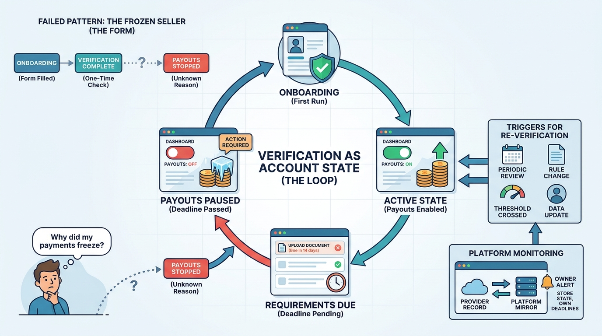

Part V — TRUST: Card Data, Fraud, Authentication and Compliance
Know Your Customer, Watch the Money: Compliance as a System
AI-assisted: researched and written with Claude Code; illustrations generated with Gemini. How this works

Image generated by Google Gemini (gemini-3-pro-image-preview)